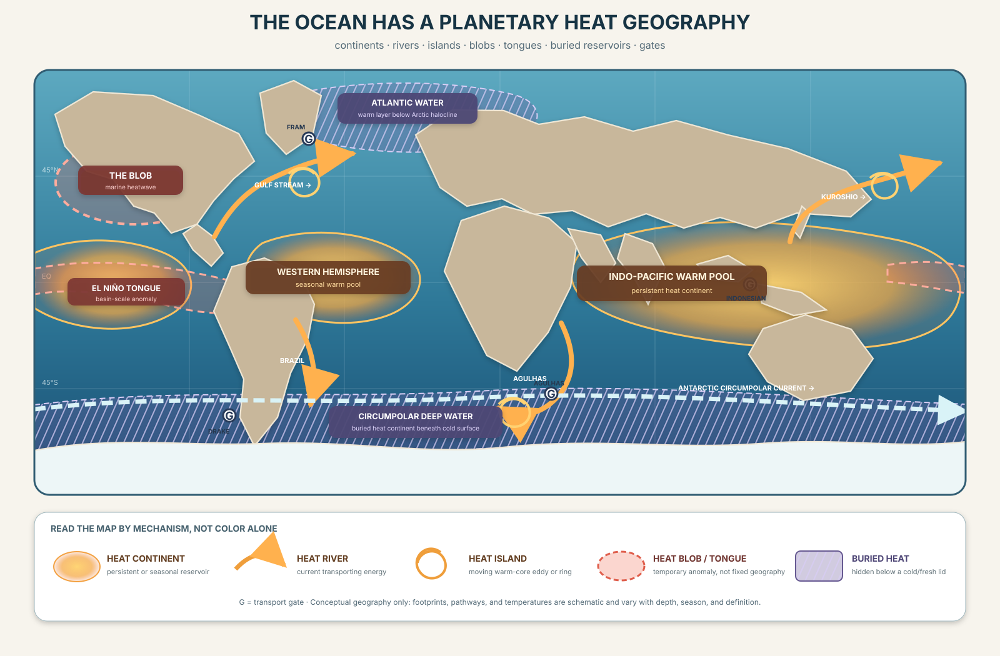

CONTINENT
Persistent or seasonal reservoir
Mapping Earth's Hidden Waterworld
ATLAS 05 · POLAR RINGSA fluid geography
Not of land—of stored heat, moving water, temporary anomalies, submerged layers, and the narrow passages that rearrange them.

Schematic, permeable, moving regions · not fixed boundaries · not a live analysis
Select an observed layer for a text summary by latitude band.
Equirectangular display; the antimeridian is the left/right seam and 0° longitude is centered.
Trace the displayed surface field around the same requested latitude north and south. Land-or-missing gaps expose analyzed-water continuity; they do not measure currents or heat transport.
| Ring | Analyzed-water coverage | Water arcs | Longest arc | Field mean and range |
|---|
| Region | Mean | Range | Valid cells |
|---|
The map grammar
Persistent or seasonal reservoir
Current carrying water and energy
Moving warm-core ring or eddy
Temporary regional anomaly
Basin-scale anomaly extending east
Warm layer beneath a cold or fresh lid
Narrow section controlling exchange
The measurement firewall
A value at a place, depth, and time.
Energy integrated through declared water.
Energy crossing a declared gate per time.
Departure from a declared climatology.